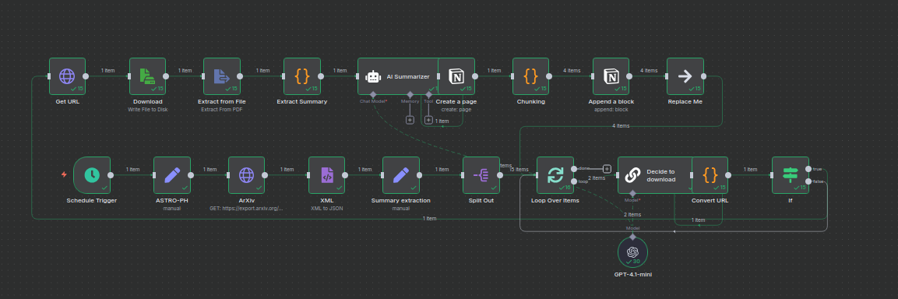
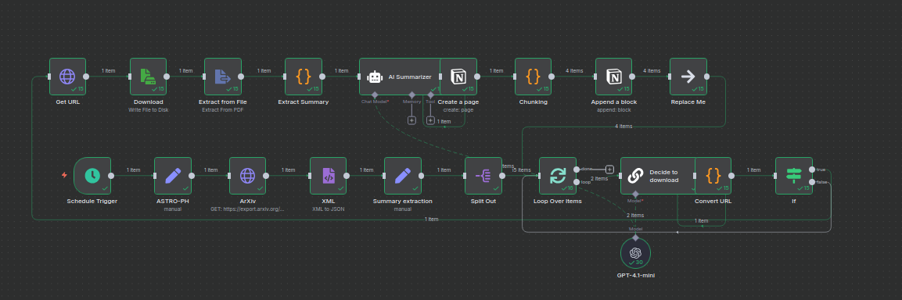

Overview
n8n is an open-source workflow automation platform that powers complex AI pipelines for data processing, market intelligence, and operational automation. Running self-hosted with Docker, it connects APIs, databases, AI models, and notification systems into sophisticated automation workflows.
Key Capabilities
🤖 AI-Powered Research
Automated news summarization, market intelligence gathering, and research paper processing using OpenAI GPT-4, Claude, and local Ollama models.
📊 Market Data Processing
Real-time forex data retrieval, technical analysis, chart generation, and automated trading signal detection with EODHD and TradingView integration.
🔍 RAG Systems
Retrieval-Augmented Generation workflows with Qdrant vector database, semantic search, and hybrid retrieval for accurate question-answering.
📱 Telegram Integration
Real-time notifications, interactive commands, and mobile-first interfaces for monitoring workflows, trading signals, and system alerts.
🗄️ Notion Automation
Automated database population, research note creation, and knowledge management with Notion API integration for structured data storage.
📄 Document Intelligence
PDF parsing, XML processing, web scraping, and automated summarization for extracting insights from maritime regulations and financial reports.
Featured Workflows
1. AI Market Intelligence Pipeline
Trigger: Scheduled (every 4 hours)
Components:
- EODHD News API for real-time financial news
- Dual-stage filtering (recent news + deduplication)
- OpenAI GPT-4 for news summarization
- Forex data retrieval (XAUUSD, EURUSD)
- Chart generation and technical analysis
- Notion database integration for research tracking
- Telegram notifications with formatted summaries
Output: Curated market intelligence reports with charts, summaries, and database entries
2. RAG Question-Answering System
Trigger: Webhook (POST request)
Components:
- Webhook receiver for query extraction
- Qdrant vector store retrieval (semantic search)
- OpenAI embeddings (text-embedding-3-small)
- Question-Answer Chain with context injection
- OpenAI Chat Model (GPT-4) or Ollama (local LLMs)
- Webhook response with AI-generated answers
Output: Accurate answers with source citations from indexed documents
3. Automated Document Processing
Trigger: Scheduled (daily at configured time)
Components:
- URL extraction from RSS/API feeds
- ArXiv research paper downloads
- XML parsing for metadata extraction
- PDF download and text extraction
- AI-powered summarization (GPT-4)
- Notion page creation with structured summaries
- Loop processing for batch operations
Output: Research library with automated summaries in Notion database
Technology Stack
Integration Capabilities
Financial Data Sources
EODHD, Interactive Brokers, TradingView, Yahoo Finance, Alpha Vantage, Binance, QuantConnect
AI Providers
OpenAI (GPT-4, GPT-4o), Anthropic (Claude Sonnet), Ollama (Llama, Mistral), Perplexity
Databases & Storage
PostgreSQL, Qdrant, SQLite, Notion, Google Sheets, Airtable
Communication
Telegram, Email (SMTP), Slack, Discord, Webhooks, SMS
Workflow Design Principles
- Error Handling: IF nodes for graceful error recovery and retry logic
- Modular Design: Reusable sub-workflows and function nodes
- Rate Limiting: Controlled API calls to avoid throttling
- Data Transformation: JavaScript/Python code nodes for complex processing
- Logging: Comprehensive logging to Notion and file storage
- Monitoring: Telegram alerts for workflow failures and completions
Use Cases
Quantitative Research
Automated paper downloads, summarization, and strategy extraction for QuantConnect algorithm development.
Market Surveillance
Real-time news monitoring, sentiment analysis, and market-moving event detection with instant alerts.
Maritime Operations
Automated processing of SOLAS/MARPOL regulations, safety bulletin distribution, and compliance tracking.
Knowledge Management
Automated indexing of PDFs, research papers, and documentation into searchable vector databases.
Deployment Architecture
Self-Hosted Infrastructure
- Container: Docker Compose with persistent volumes
- Networking: Reverse proxy with SSL (Nginx/Caddy)
- Database: PostgreSQL for workflow metadata and execution history
- Storage: Volume mounts for file processing and logs
- Monitoring: Uptime checks, execution logs, Telegram alerts
- Backup: Automated workflow export and database backups
Example Workflow: Daily Research Digest
Pipeline Overview
Schedule: Daily at 8:00 AM UTC
Steps:
- Fetch latest ArXiv papers in quantitative finance category
- Filter papers by keywords (machine learning, algorithmic trading, portfolio optimization)
- Download PDFs and extract abstracts
- Summarize each paper using GPT-4 (200-word summaries)
- Generate trading strategy suggestions based on paper findings
- Create Notion database entries with metadata and summaries
- Send formatted digest to Telegram with paper links
- Store PDFs in designated folder for future RAG indexing
Average Execution Time: 3-5 minutes for 10-15 papers
Advanced Features
Webhook Triggers
RESTful endpoints for external integrations, mobile apps, and cross-platform automation
Sub-Workflows
Reusable workflow components for DRY principle and modular architecture
Conditional Logic
Complex branching with IF/Switch nodes for intelligent routing and decision-making
Loop Processing
Batch operations with Loop nodes for processing arrays and paginated API results
Custom Code
JavaScript and Python nodes for advanced data transformation and API interactions
Credential Management
Encrypted credential storage for API keys, tokens, and database passwords
Benefits of Self-Hosting
- Data Privacy: All data processing happens on local infrastructure
- Cost Control: No per-execution fees, only infrastructure costs
- Unlimited Workflows: No artificial limits on workflow count or complexity
- Custom Integrations: Full control over node development and API access
- Performance: Dedicated resources for workflow execution
- Compliance: Meet data residency and security requirements
Getting Started
n8n can be deployed using Docker Compose with minimal configuration. The platform includes 400+ pre-built nodes for popular services, plus the ability to create custom nodes for proprietary APIs. Workflows are designed visually with a drag-and-drop interface, making complex automation accessible without extensive coding.
For detailed setup instructions and workflow examples, refer to the official n8n documentation or the Local AI articles in the Publications section.